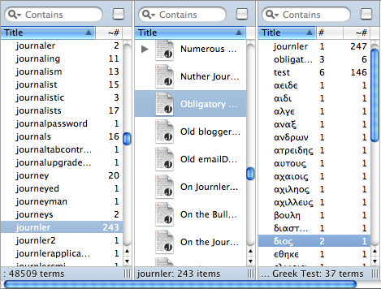
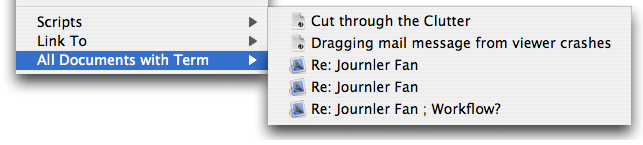

Using the Lexicon
- Select a word from the list at the left
- Journler finds every document with the word
- Select one of the documents and Journler…
- displays the file
- highlights the selected word
- displays every word in that file
- Repeat with the words in the new list
About the Lexicon
The Journler Lexicon is an infinite depth representation of the term-document relationships in your journal. Entries and textual file attachments are composed of words which often appear in more than one place. The Lexicon shows the connections between words and entries, allowing you to see the implicit relationships between your documents.The Lexicon is a new perspective on your thoughts and media, preferring linguistic and semantic affinities to temporal and organizational structures. Connections exist that you don't know about. Discover them.
The Embedded Lexicon
 Bypass the Lexicon and go straight to the connections. Select any text based document in your journal, including entries, PDF, Word and text files as well as Mail messages and web pages or web archives. Highlight a single word in the text and right click (or hold down the ctrl key, clicking once). At the bottom of the context menu you will find the All Documents with Term submenu. Choose a document from the list. Journler jumps to that entry or resource and highlights occurrences of the term you had originally selected.For more information about the Lexicon please refer to the Lexicon Help in Journler's help files.